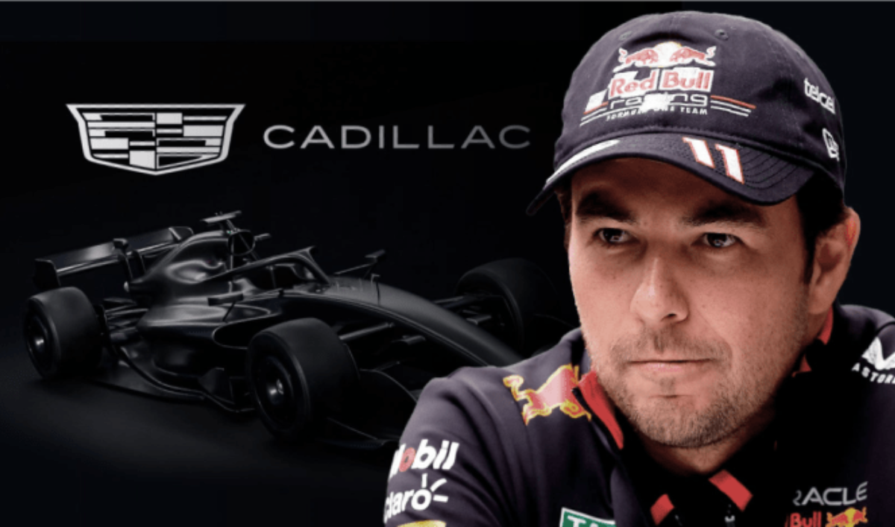

Checo Pérez: Lo que sabemos de Cadillac y su posible regreso a F1
MIAMI.- Los rumores alrededor de la supuesta firma de Sergio Pérez con el equipo Cadillac que debutará en la Fórmula 1 en 2026 han explotado por doquier, pero la verdad es que Checo no ha firmado con ningún equipo de la Máxima Categoría, al menos no todavía y mucho menos será presentado en Miami este fin de semana.
Según lo que pudo saber ESPN con un par de fuentes consultadas, Checo Pérez no ha estado recientemente en Miami, no piensa asistir al Gran Premio de Miami 2025 ni estará presente en el lanzamiento del equipo Cadillac que se llevará a cabo la noche del sábado 3 de mayo en Miami.
Las fuentes consultadas por ESPN aseguran que todo son especulaciones provocadas por publicaciones en redes basadas en la localización del avión privado que normalmente utiliza Checo Pérez, pero el cual se renta cuando él no lo usa.
Cadillac sí es una opción para el piloto mexicano que compitió en la Fórmula 1 de 2011 a 2024 con Sauber, McLaren, Force India, Racing Point y con Red Bull en las cuatro temporadas más recientes.
El team principal de Cadillac F1, Graeme Lowdon, ha dicho que tiene una baraja de siete u ocho pilotos para decidirse por su dupla en 2026.
La idea de Checo Pérez en este momento ha sido, como él mismo lo ha expresado a F1.com y en otras entrevistas, esperar seis meses para tomar una decisión.
En ese tiempo, el mexicano que fue subcampeón de F1 en 2023 ha disfrutado de su familia, asistido a partidos de futbol, conciertos de música, ha vacacionados con sus hijos en Disneyland, ha ido a la playa en Bermuda y Punta Mita, Nayarit y, en general, ha disfrutado de una vida que no conocía desde que se mudó a Europa para perseguir su sueño de ser piloto de F1, cuando tenía 14 años.
También, Checo Pérez está a la espera de conocer qué cambios se pueden suscitar en la parrilla de la F1 para 2026, porque ,aunque la mayoría de los pilotos tienen contrato, un “pez gordo” como Max Verstappen podría agitar las aguas del mercado si decidiera salir del contrato que lo une hasta 2028 con Red Bull.
Un posible movimiento del tetracampeón del mundo generaría un efecto en cadena que podría abrir espacios más allá de los dos asientos abiertos que tiene Cadillac.
Se dice que Aston Martin podría ser un destino de Verstappen e incluso el asesor de Red Bull, Helmut Marko, expresó su preocupación de que Max deje a la escudería de Milton Keynes si el rendimiento del monoplaza RB21 no es lo suficientemente competitivo para enfrentar a los McLaren, Ferrari y Mercedes.
Checo Pérez está a la expectativa, con una opción clara como Cadillac, pero su equipo de trabajo ha explorado otras más con otros equipos, aunque no han especificado cuáles ni si Julian Jakobi aún es el agente que manejará esta posible segunda etapa de la trayectoria de Pérez en la F1.
También, la semana pasada Formula1.Hu un portal húngaro publicó una entrevista de su corresponsal con el team principal de Sauber, Jonathan Wheatley, quien fuera hasta 2024 director deportivo de Red Bull.
Ahí, Wheatley alabó a Pérez como piloto, su retroalimentación con los ingenieros y su capacidad para rehacerse ante las adversidades.
Esa entrevista no significa que Sauber quiera a Checo Pérez, ya que tiene dos pilotos con contrato, pero sí pone el nombre del mexicano en el mapa, como también lo hizo la exclusiva que dio el de Jalisco a Lawrence Barretto, en F1.com, que fue claramente una manera del mexicano de decir: ‘aquí estoy y quiero volver’.
Pérez había dicho, antes de que se supiera que Red Bull le pagaría su contrato y lo bajaría del asiento para 2025, que no regresaría a la F1, si no fuera para conducir un monoplaza que compita por puntos.
Cadillac como equipo nuevo, aunque vaya a contar con motor Ferrari, deberá pagar derecho de piso, adaptación y un proceso de desarrollo y nadie espera que pueda ser contendiente a meterse consistentemente en los puntos.
La debilidad de un equipo debutante se puede suplir con una oferta interesante en lo competitivo y, por supuesto, en lo económico.
Los seis meses de ‘sabático’ de Checo Pérez, según él lo estableció, terminan en junio, así que tal vez, ¿por qué no? Entonces sabremos cuál será su destino en la F1, si es que lo hay, pero por el momento no ha firmado nada.